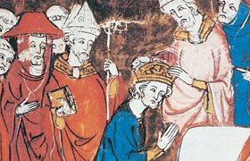

Lezione 7  Sacro romano impero
Sacro romano impero

Carlo Magno venne incoronato imperatore la notte di Natale dell’800, in San Pietro a Roma, da papa Leone III, che alla fine della messa gli pose una corona d’oro sul capo.
I presenti lo acclamarono per tre volte ripetendo: “A Carlo, Augusto, coronato da Dio, grande e pacifico imperatore dei Romani, vita e vittoria!”.
Veniva così sancita la nascita di un Impero romano cristiano, nel quale si fondevano due componenti essenziali: l’Impero era “romano” e in quanto tale si proponeva come erede della storia romana, della sua maestosità e grandezza; l’Impero era “sacro”, perché nato per volontà divina e sotto la protezione del Dio dei cristiani.
Con l’incoronazione di Carlo il papa riaffermò la sua autorità, ponendosi quasi come fonte del potere imperiale. L’Impero guidato da Carlo Magno fu però molto diverso dall’Impero romano: non gravitava sul Mediterraneo ma piuttosto sulla terra ferma, verso il Reno. Non aveva una capitale, poiché soltanto negli ultimi anni dell’Impero Carlo Magno si stabilì più o meno in modo permanente ad Aquisgrana. Era un Impero profondamente cristiano, che concepiva l’imperatore come protettore della Chiesa nei confronti dei suoi nemici terreni, e il papa come guida e reggitore spirituale.
Carlo Magno in una lettera a papa Leone III definì i ruoli delle due autorità, quella imperiale e quella papale:
«Questo è il nostro compito: aiutati dalla divina pietà dobbiamo difendere ovunque la santa Chiesa di Cristo; all’esterno con le armi, contro gli assalti dei pagani e le devastazioni degli infedeli, all’interno dobbiamo consolidarla diffondendo la conoscenza della dottrina cattolica.
Altro è il vostro compito, beatissimo padre: proteggere i nostri eserciti, tenendo levate – come Mosè – le braccia, sì che, con la vostra intercessione, il popolo cristiano, guidato da Dio, e quasi un suo dono, riporti sempre ed ovunque la vittoria contro i nemici del suo nome».
(Lettera di Carlo Magno a papa Leone III, 796, in Rinaldo Comba, L’età medievale, Loescher, Torino, 1990).